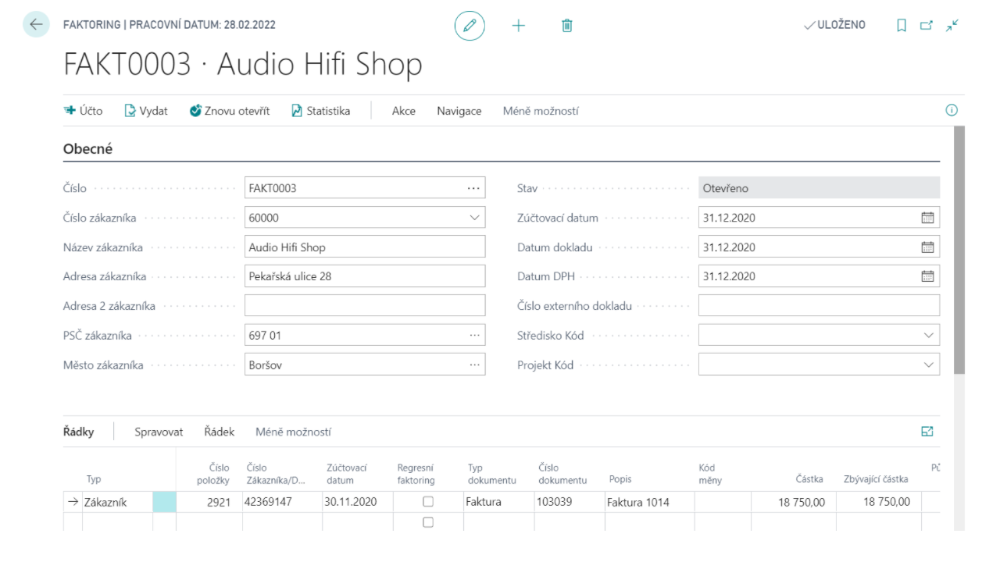
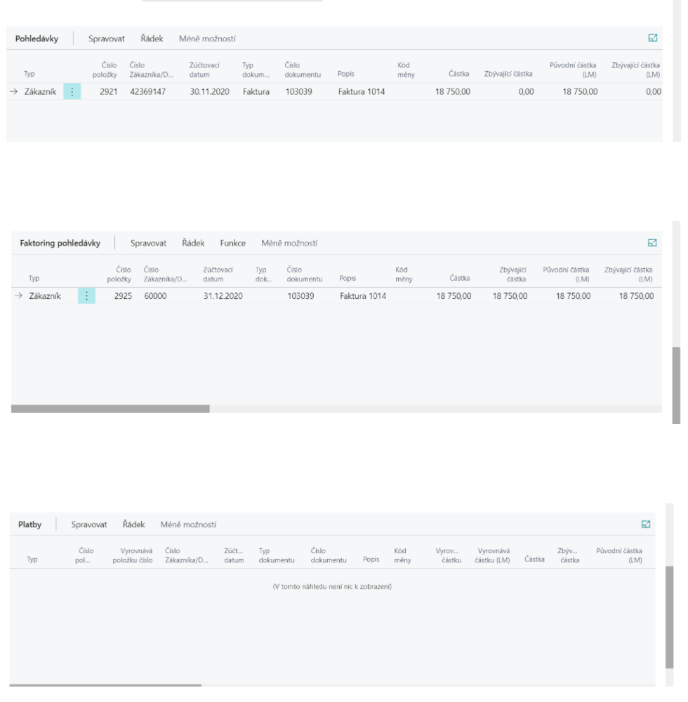

Factoring
Add-on modul Faktoring rozšiřuje možnosti oblasti Správa financí systému Dynamics 365 Business Central o možnost evidence a účtování postoupení pohledávek a vytváření faktoringových smluv. Je podporována i varianta regresního faktoringu, kdy faktor může pohledávku/závazek vrátit.
Funkčnost add-on modulu je integrovaná s add-on modulem Napojení na MS Word. Využitím této integrace lze na základě definovaných šablon vytvářet faktoringové smlouvy ze systému Dynamics 365 Business Central do dokumentů Microsoft Word.
Pořízení dokladu faktoringu
- Vyberte ikonu
 , zadejte Přehled faktoringů a poté vyberte související odkaz.
, zadejte Přehled faktoringů a poté vyberte související odkaz. - Na přehledu klikněte na tlačítko Nový.
- Na kartě dokladu Faktoringu do hlavičky doplťe informaci o zákazníkovi a zúčtovací datum.
- Konkrétní položky/závazky, které mají být podstoupeny, lze vybrat pomocí polí Typ položky a Číslo položky. Pokud se jedná o regresivní faktoring, faktor může pohledávku/závazek vrátit, musí být zaškrtnuto pole Regresní faktoring na řádku dokladu.

Zaúčtování faktoringu
Pro zaúčtování faktoringu postupujte následujícím způsobem:
- Před zaúčtováním dokladu faktoringu je doklad třeba vydat.
- Pro zaúčtování použijte funkci Účtování.
- Zaúčtováním dokladu vznikne doklad Zaúčtovaný faktoring.
Řádky dokladu Zaúčtovaný faktoring jsou rozděleny do tří záložek:
- Pohledávky – postoupené položky.
- Faktoring pohledávky – nově vzniklé položky zákazníka k faktorovi.
- Platby – položky typu platba, které vyrovnávají faktoringové pohledávky.

Účtováním faktoringu jsou uzavřeny původní položky zákazníka/dodavatele a k faktorovi jsou zaúčtovány nové pohledávky.
Finanční účtování je určeno Účto skupinou faktoringu z Nastavení faktoringu:

Pokud je v Nastavení faktoringu zapnuté Přeúčtovat původní položku, vznikne u původního zákazníka/dodavatele nová zákaznická/dodavatelská položka. Ta umožňuje sledovat saldo původních zákazníků/dodavatelů včetně postoupených dokladů. Finanční účtování je určeno Účto skupinou přeúčtování z Nastavení faktoringu. V Nastavení účto skupin zákazníka by pro tuto účto skupinu měl být nastaven podrozvahový účet. Podrozvahová položka je uzavřena v okamžiku uzavření faktoringové pohledávky.
Vrácení faktoringové pohledávky
Pokud se jedná o regresní faktoring (faktor může pohledávku vrátit) musí být doklad zaúčtován se zaškrtnutým pole Regresní faktoring na řádku dokladu.
- Vyberte ikonu , zadejte Účtovaný faktoring a poté vyberte související odkaz.
- Vyberte zaúčtovaný doklad, který chcete zpracovat.
- Na kartě účtovaného faktoringu použijte funkci Vrátit pohledávku faktoringu

- Po tomto příkazu systém odúčtuje nově vzniklou faktoringovou položku a naúčtuje ji zpět k zákazníkovi / dodavateli.
Viz také